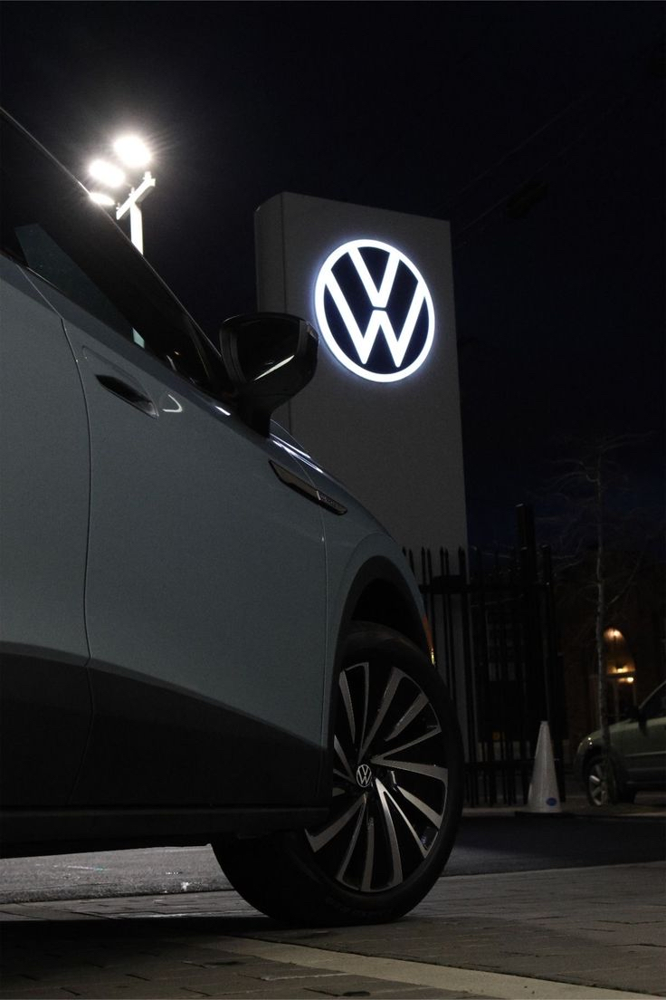

Trizzyy German Auto Hub is a locally owned car dealership located in Gaborone at 11556, Kgaladua Road. Established in 2026, the dealership has quickly grown into one of the fastest growing German vehicle hubs in Botswana. Our mission is to provide customers with high quality German vehicles that combine performance, reliability and modern technology.
We specialize mainly in Volkswagen vehicles such as the Polo, Golf, Passat and Tiguan. These vehicles are known worldwide for their engineering excellence and comfort. At Trizzyy German Auto Hub we ensure that every vehicle meets the highest standards before it reaches our customers.
Whether you are looking for a reliable everyday car, a luxury sedan or a family SUV, our dealership offers a range of vehicles suitable for different needs. Our team is dedicated to providing professional customer service and helping buyers find the perfect car.